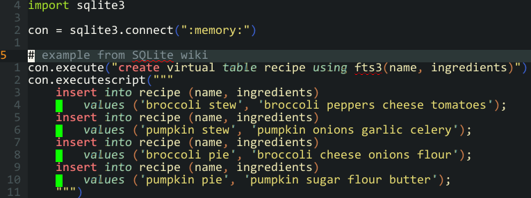

Estimated reading time: 4 minutes
I have a secret¶
A terrible secret haunts me, at times daily… I have virtually no SQL skills.
Somehow I’m nearly twenty years in to my career and I possess so little SQL knowledge that I need to thumb a reference every single time its use passes my desk.
The reason this hasn’t mattered as much as it should is simply that I’ve been terribly lucky. When working on systems that require a lot of SQL use there are amazing SQL geniuseseses who sneak around behind the scenes making things awesome. They often leave cute little love notes in the commit messages alerting me to the wonders of documentation, and on occasion even self-upping their owed beer count at the same time.

I’ll submit that I’m not entirely ignorant of the domain. I routinely use sqlite3 at the command line for inspecting configuration files and local application databases. I’ve written a few apps that use sqlite for their data storage, or that query remote postgresql servers for reporting. I know what an n+1 problem is, but I’ll still create them through lack of forethought from time to time. It is just that my knowledge stops right about there.
ORM usage¶
The number one thing that has kept me away from a deeper understanding of SQL is ORMs. Let us be honest, most of the time we interact with SQL fronted databases it is from a language where we are treating SQL as nothing more than a DSL. Often, it would feel fair to say we treat it this way with little to no interest in what is going on behind the scenes.
If you’re using Python — like I was when I decided to write this — you’re probably reaching for sqlalchemy to integrate databases in to your codebase. It is spectacular, especially when combined with alembic for migration management.
Using a well designed ORM allows us to free ourselves from a lot of the mental overhead of dealing with databases; they’ll handle connections, transactions, save points, etc. They’ll almost always handle the idiosyncrasies of different databases too, which is fantastic when you’re developing against sqlite and deploying to a large scale postgresql installation1.
Another effect, which admittedly may be a by-product of how I commonly use ORMs, is the reconnection of constraints to models. It feels all too common in many non-ORM projects to see duplication of constraint handling. We’ll see constraints defined in the DDL via SQL and again in the codebase’s host language. We, as relational database users, know that this duplication violates the spirit of a couple of Codd’s rules:
A single language must be able to define data, views, integrity constraints, authorization, transactions, and data manipulation.
…
Integrity constraints must be available and stored in the metadata, not in an application program.
—Dr. E. F. Codd
However, eventually we end up hoisting a lot of constraint handling in to an application as it can both improve and simplify error handling logic. And then over time they will become out of sync in various ways, either through negligence or simple oversight.
When we allow ourselves to define our system, constraints included, within the realms of an ORM we can rely on the automatic transfer of model design to the underlying database. I feel it is important to note that Codd never appears to suggest we use two languages for database access and applications, just that a single language can do everything within our database and a ORM seems to fit the bill. It is just that people have coalesced around SQL as the only interface to relational databases over the decades, and as such we end up using two distinct languages far more often that we perhaps ought.
Editing¶
When working with SQL without an ORM things change greatly. You find yourself having to consciously flip back and forward between mental models of how you’re processing your data, and personally I can find that quite challenging at times. I mean yes, at the top-level we may be thinking in unison for both our application languages and SQL, but we’re often falling back to applying a manual remapping of the derived table when we’re processing the results. We’re literally hand rolling the work that an already written — and hopefully well tested — ORM can already perform for us.
Even the little things can be jarring. One that surprises me is watching people work with SQL embedded in other source files doing so in editors that don’t really help such usage. Everything is fine in vim/emacs land, where one can apply syntax highlighting and linting to specific regions of a file2. For other editors, and most IDEs, you’re often left floundering in a heap of unstructured literal strings peppered all over the place.
Wait, am I talking myself out of learning?¶
I know this has sounded like a sweetheart letter aimed at sqlalchemy/activerecord/odb, but it isn’t meant that way. Okay, it kinda of is. However, I want to know more.
I’m tired of needing to enlist the help of others when I want a deeper understanding of what is causing slowdowns with complex queries, or having to reach for a manual to remember little things like how to manage collation rules.
Acceptance¶
Now that I’ve accepted this fact enough to scribble this note I’m going to do something to fix it.
I’ve picked up a couple of books, and I’m going to immerse myself in the experience for a little while. If you have advice or pointers to resources, then please drop me a mail.
Footnotes
- 1
That is probably a good hint as to why I’m still capable of producing expensive
n+1queries, even when I know what they are.- 2
My opinion being that the narrow region feature of
emacs, and the excellent vim substitute, are the gold standard for working with complex SQL embedded in another language’s files.
Authenticate this page by pasting this signature into Keybase.
Have a suggestion or see a typo? Edit this page